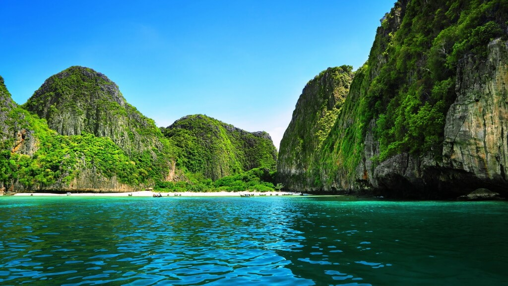

Меня зовут Александр, мне 41 год. В данный момент проживаю долеко от родного города, Москвы, в жаркой Паттайе. Являюсь Руководителем направления в большой Российской логистической компании, так что тут еще и по работе, так как открываем пару филиалов в Тайланде
Изначально, процесс обучения и получения знаний для меня - естественный ежедневный процесс. В тот момент, когда стало ясно, что будет переезд в другую страну, я решил добавить обучение по новому профилю, так как считал, что надо двигаться дальше, к тому же, не надо тратить ежедневно время на дорогу. Вот так тут и оказался

Хочется добраться до этого места, так как уже близко, но все равно расстояние 1000+ км
